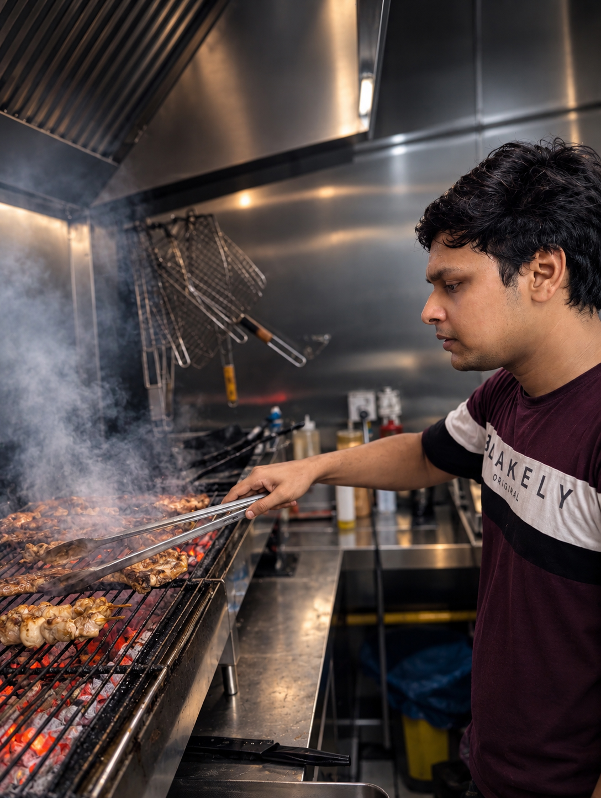

11 June – 13 September 2026
Grill Chef
SEK Paralimni · Cyprus
Prepared and grilled meats including souvlaki, sheftalia, pork chops and chicken; assembled skewers, operated fryers, plated meals, prepared salads, and maintained kitchen hygiene during service.
Food preparation · Grill operations